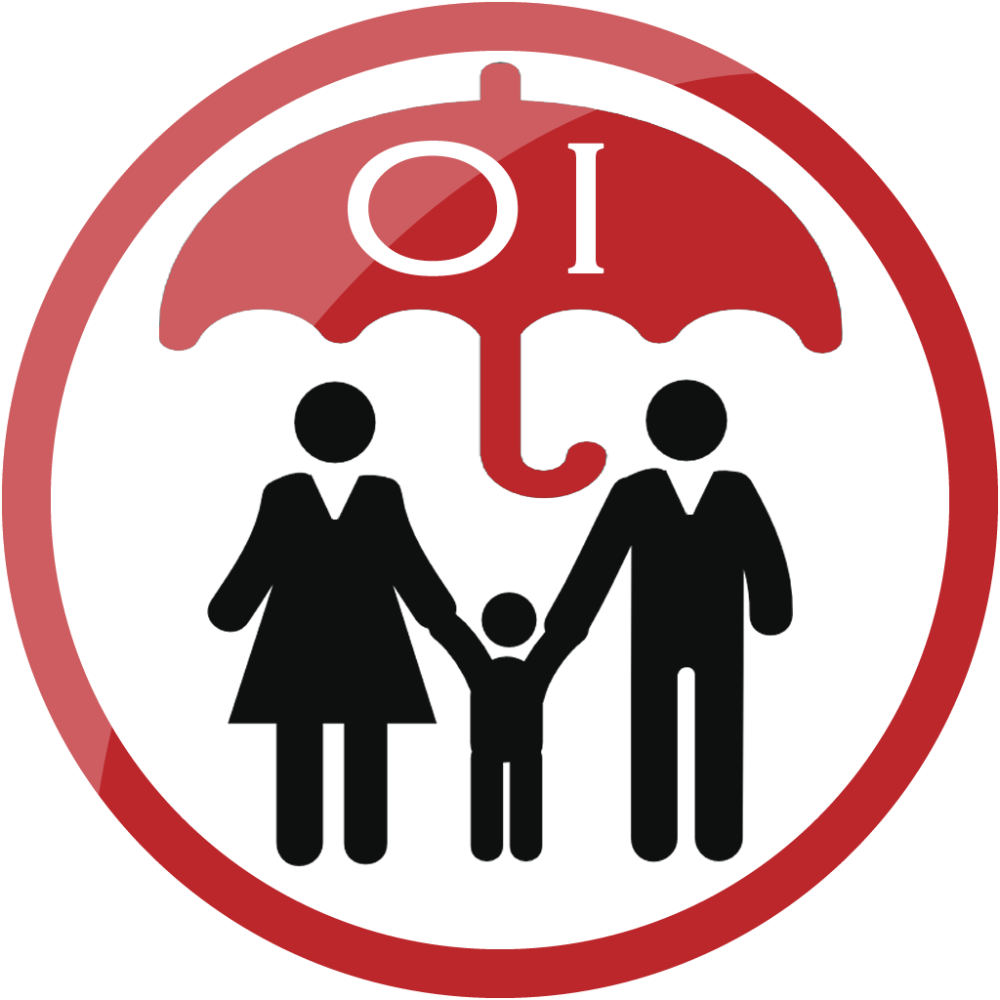

Oferta Institucional
Versión 1.0

Desarrollado por
Alexandra Espinosa Mejía
Andrés Felipe Escobar Morales
John Eduard López
Steven Muñoz
Con el apoyo de

El uso de esta aplicación consume datos del dispositivo móvil
Todos los derechos reservados - 2013
Aplicación bajo licencia GNU GPL